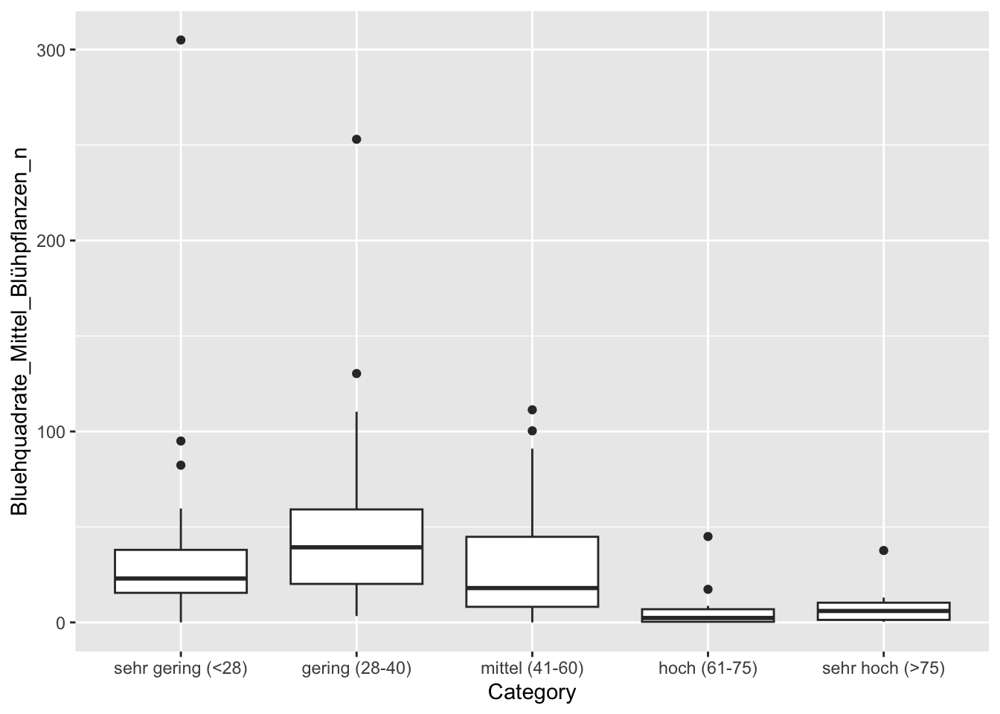
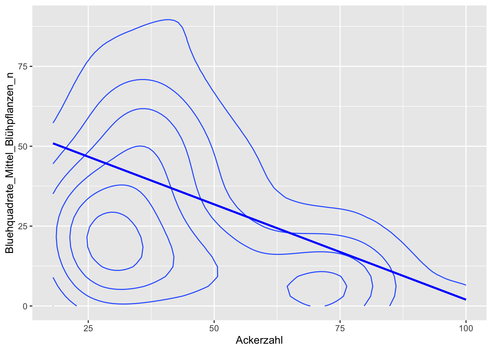

# load libraries
library(tibble)
library(tidyr)
library(dplyr)
library(ggplot2)
library(tidyselect)
library(readxl)
# used stat libraries
library(Rcmdr)
library(car)
library(rgl)Statistik
#' ## loading file
# finka_statistik <- read.delim("finka_statistik.csv", sep=",")
finka <- read.csv("finka_total.csv")
# Bodendaten laden
bodendaten <- read_xlsx("20230222_Anbaudaten_Standorte_Bodendaten_Messpunkte.xlsx", 7)
# filter(row_number() <= 95) %>%
# mutate(Fieldtype = case_when(
# Fläche = "MFK" ~ "m",
# Fläche = "VFK" ~ "k",
# Fläche = "VFB" ~ "b",
# TRUE ~ "Unknown" # Handle Values outside the specified ranges
# ))
# filter(Fläche == "MFK")
# Frage: MFK und co.
# cleaning finka MFK
finka_filter <- finka %>%
separate(Schlagnummer.Plotnummer, into = c("ID", "Column2"), sep = "(?<=\\d)(?=[A-Za-z])") %>%
mutate(ID = as.character(ID)) %>%
filter(Bewirtschaftung == "herbizidfrei") %>%
mutate(Jahr = as.character(Jahr))
# cleaning finka_AZ
finka_filter_AZ <- finka %>%
# separate(Schlagnummer.Plotnummer, into = c("ID", "Column2"), sep = "(?<=\\d)(?=[A-Za-z])") %>%
# mutate(ID = as.character(ID)) %>%
filter(Bewirtschaftung == "herbizidfrei") %>%
mutate(
Ackerzahl = case_when(
Ackerzahl == "25-28" ~ "26",
Ackerzahl == "75-92" ~ "78",
Ackerzahl == "35-60" ~ "47",
TRUE ~ as.character(Ackerzahl))) %>%
mutate(Ackerzahl = as.numeric(Ackerzahl)) %>%
mutate(Ackerzahl = ifelse(Jahr %in% c(2021, 2022), Ackerzahl[Jahr == 2023], Ackerzahl)) %>%
mutate(Ackerzahl = ifelse(Jahr == 2021 & Schlagnummer.Plotnummer == "18m", 40, Ackerzahl)) # Anpassung Bethmann zu Schweer# join der tabellen
# bodendaten_join <- bodendaten %>% mutate(ID = as.character(ID))
#
# join <- bodendaten_join %>% inner_join(finka_filter_AZ, by = "ID")ANOVA Jahr
Unterschiede zwischen den 3 Versuchsjahren und ihren Auswirkungen auf die Versuchsflächen.
# Über alle Jahre und herbizidfreier Bewirtschaftung
m1 <- aov(Artenzahl_Plot_100_qm_Spontanflora_n ~ Jahr, data = finka_filter)
summary.lm(m1)
Call:
aov(formula = Artenzahl_Plot_100_qm_Spontanflora_n ~ Jahr, data = finka_filter)
Residuals:
Min 1Q Median 3Q Max
-8.7667 -3.2333 0.2333 3.2833 9.7667
Coefficients:
Estimate Std. Error t value Pr(>|t|)
(Intercept) 7.7000 0.7507 10.257 <2e-16 ***
Jahr2022 1.5333 1.0617 1.444 0.152
Jahr2023 1.0667 1.0617 1.005 0.318
---
Signif. codes: 0 '***' 0.001 '**' 0.01 '*' 0.05 '.' 0.1 ' ' 1
Residual standard error: 4.112 on 87 degrees of freedom
Multiple R-squared: 0.02458, Adjusted R-squared: 0.002155
F-statistic: 1.096 on 2 and 87 DF, p-value: 0.3387# Über alle Jahre und Bewirtschaftungen
m2 <- aov(Deckungsgrad_Segetalarten_prozent ~ Jahr, data = finka)
summary.lm(m2)
Call:
aov(formula = Deckungsgrad_Segetalarten_prozent ~ Jahr, data = finka)
Residuals:
Min 1Q Median 3Q Max
-19.695 -14.881 -8.881 10.305 75.305
Coefficients:
Estimate Std. Error t value Pr(>|t|)
(Intercept) 5707.312 3216.682 1.774 0.0772 .
Jahr -2.814 1.591 -1.769 0.0780 .
---
Signif. codes: 0 '***' 0.001 '**' 0.01 '*' 0.05 '.' 0.1 ' ' 1
Residual standard error: 21.4 on 268 degrees of freedom
(5 observations deleted due to missingness)
Multiple R-squared: 0.01154, Adjusted R-squared: 0.007854
F-statistic: 3.13 on 1 and 268 DF, p-value: 0.07802Siehe Boxplots
Deckungsgrad_Segetalarten_prozent
ANOVA AZ-Category Data
Bewertungsklasse Ertragsfähigkeit: Die Einteilung der Bewertungsklassen der natürlichen Ertragsfähigkeit von Böden nach der Ackerzahl orientiert sich am Bewertungsschema des Landesamt and Umweltschutz (2003):
| Kategorie | AZ | |||
|---|---|---|---|---|
| sehr gering | (<28) | |||
| gering | (28-40) | |||
| mittel | (41-60) | |||
| hoch | (61-75) | |||
| sehr hoch | (>75) |
finka_AZ <- finka_filter_AZ %>% # Create a convenience variable based on factorization
mutate(Category = case_when(
Ackerzahl < 28 ~ "sehr gering (<28)",
Ackerzahl >= 28 & Ackerzahl <= 40 ~ "gering (28-40)",
Ackerzahl >= 41 & Ackerzahl <= 60 ~ "mittel (41-60)",
Ackerzahl >= 61 & Ackerzahl <= 75 ~ "hoch (61-75)",
Ackerzahl > 75 ~ "sehr hoch (>75)",
TRUE ~ "Unknown" # Handle Values outside the specified ranges
)) %>%
mutate(Category = factor(Category, levels = c(
"sehr gering (<28)",
"gering (28-40)",
"mittel (41-60)",
"hoch (61-75)",
"sehr hoch (>75)",
"Unknown" # Include "Unknown" as a level for values outside the specified ranges
)))
# Create a new data frame with the two columns side by side
# comparison_df <- data.frame(
# Ackerzahl = join_mutate$Ackerzahl,
# AZ = join_mutate$AZ
# )
# Display the comparison table using knitr::kable
# knitr::kable(comparison_df)m1 <- aov(Deckungsgrad_Segetalarten_prozent ~ Category, data = finka_AZ)
# Variablen:
# Deckungsgrad_Segetalarten_prozent
# Bluehquadrate_Mittel_Blühpflanzen_n
# Artenzahl_Plot_100_qm_Spontanflora_n
summary.lm(m1)
Call:
aov(formula = Deckungsgrad_Segetalarten_prozent ~ Category, data = finka_AZ)
Residuals:
Min 1Q Median 3Q Max
-30.387 -15.391 -5.391 9.609 70.571
Coefficients:
Estimate Std. Error t value Pr(>|t|)
(Intercept) 20.391 4.645 4.390 3.28e-05 ***
Categorygering (28-40) 10.996 6.131 1.794 0.0765 .
Categorymittel (41-60) 4.037 7.551 0.535 0.5943
Categoryhoch (61-75) -10.391 7.933 -1.310 0.1938
Categorysehr hoch (>75) -17.780 8.759 -2.030 0.0455 *
---
Signif. codes: 0 '***' 0.001 '**' 0.01 '*' 0.05 '.' 0.1 ' ' 1
Residual standard error: 22.28 on 84 degrees of freedom
(1 observation deleted due to missingness)
Multiple R-squared: 0.1606, Adjusted R-squared: 0.1206
F-statistic: 4.017 on 4 and 84 DF, p-value: 0.004966# boxplot(Deckungsgrad_Segetalarten_prozent ~ Category, data = join_mutate)
finka_AZ %>% ggplot(aes(Category, Deckungsgrad_Segetalarten_prozent)) +
geom_boxplot()# Problem: AZ Data is partially missing (0 and 1): line 17 ANOVA AZ-Numeric Data - Deckungsgrad_Segetalarten_prozent
m1 <- aov(Deckungsgrad_Segetalarten_prozent ~ Ackerzahl, data = finka_filter_AZ)
# Variablen:
# Deckungsgrad_Segetalarten_prozent
# Bluehquadrate_Mittel_Blühpflanzen_n
# Artenzahl_Plot_100_qm_Spontanflora_n
summary.lm(m1)
Call:
aov(formula = Deckungsgrad_Segetalarten_prozent ~ Ackerzahl,
data = finka_filter_AZ)
Residuals:
Min 1Q Median 3Q Max
-27.615 -15.387 -5.219 10.103 75.573
Coefficients:
Estimate Std. Error t value Pr(>|t|)
(Intercept) 36.1591 5.9920 6.035 3.8e-08 ***
Ackerzahl -0.3218 0.1215 -2.649 0.00959 **
---
Signif. codes: 0 '***' 0.001 '**' 0.01 '*' 0.05 '.' 0.1 ' ' 1
Residual standard error: 22.98 on 87 degrees of freedom
(1 observation deleted due to missingness)
Multiple R-squared: 0.07464, Adjusted R-squared: 0.064
F-statistic: 7.017 on 1 and 87 DF, p-value: 0.009586# boxplot(Deckungsgrad_Segetalarten_prozent ~ Category, data = join_mutate)
finka_filter_AZ %>% ggplot(aes(Ackerzahl, Deckungsgrad_Segetalarten_prozent)) +
geom_density_2d() +
geom_smooth(method = "lm", formula = y ~ x, se = FALSE, color = "blue") # Adding linear model# Problem: AZ Data is partially missing (0 and 1): line 17 Artenzahl_Plot_100_qm_Spontanflora_n
ANOVA AZ-Caterory Data
m1 <- aov(Artenzahl_Plot_100_qm_Spontanflora_n ~ Category, data = finka_AZ)
summary.lm(m1)
Call:
aov(formula = Artenzahl_Plot_100_qm_Spontanflora_n ~ Category,
data = finka_AZ)
Residuals:
Min 1Q Median 3Q Max
-9.7333 -2.6304 0.0645 3.0645 10.3333
Coefficients:
Estimate Std. Error t value Pr(>|t|)
(Intercept) 7.5217 0.8128 9.254 1.65e-14 ***
Categorygering (28-40) 2.4137 1.0727 2.250 0.027 *
Categorymittel (41-60) 2.2116 1.2937 1.710 0.091 .
Categoryhoch (61-75) -2.0217 1.3881 -1.456 0.149
Categorysehr hoch (>75) 1.1449 1.5326 0.747 0.457
---
Signif. codes: 0 '***' 0.001 '**' 0.01 '*' 0.05 '.' 0.1 ' ' 1
Residual standard error: 3.898 on 85 degrees of freedom
Multiple R-squared: 0.1436, Adjusted R-squared: 0.1033
F-statistic: 3.563 on 4 and 85 DF, p-value: 0.009779# boxplot(Deckungsgrad_Segetalarten_prozent ~ Category, data = join_mutate)
finka_AZ %>% ggplot(aes(Category, Artenzahl_Plot_100_qm_Spontanflora_n)) +
geom_boxplot()# Problem: AZ Data is partially missing (0 and 1): line 17 ANOVA AZ-Numeric Data - Artenzahl_Plot_100_qm_Spontanflora_n
m1 <- aov(Artenzahl_Plot_100_qm_Spontanflora_n ~ Ackerzahl, data = finka_filter_AZ)
# Variablen:
# Deckungsgrad_Segetalarten_prozent
# Bluehquadrate_Mittel_Blühpflanzen_n
# Artenzahl_Plot_100_qm_Spontanflora_n
summary.lm(m1)
Call:
aov(formula = Artenzahl_Plot_100_qm_Spontanflora_n ~ Ackerzahl,
data = finka_filter_AZ)
Residuals:
Min 1Q Median 3Q Max
-8.4802 -2.9235 -0.0368 3.7637 11.0164
Coefficients:
Estimate Std. Error t value Pr(>|t|)
(Intercept) 9.36683 1.07507 8.713 1.6e-13 ***
Ackerzahl -0.01773 0.02179 -0.814 0.418
---
Signif. codes: 0 '***' 0.001 '**' 0.01 '*' 0.05 '.' 0.1 ' ' 1
Residual standard error: 4.124 on 88 degrees of freedom
Multiple R-squared: 0.007469, Adjusted R-squared: -0.003809
F-statistic: 0.6623 on 1 and 88 DF, p-value: 0.418# boxplot(Deckungsgrad_Segetalarten_prozent ~ Category, data = join_mutate)
finka_filter_AZ %>% ggplot(aes(Ackerzahl, Artenzahl_Plot_100_qm_Spontanflora_n)) +
geom_density_2d() +
geom_smooth(method = "lm", formula = y ~ x, se = FALSE, color = "blue") # Adding linear model# Problem: AZ Data is partially missing (0 and 1): line 17 Bluehquadrate_Mittel_Blühpflanzen_n
ANOVA AZ-Category Data
m1 <- aov(Bluehquadrate_Mittel_Blühpflanzen_n ~ Category, data = finka_AZ)
summary.lm(m1)
Call:
aov(formula = Bluehquadrate_Mittel_Blühpflanzen_n ~ Category,
data = finka_AZ)
Residuals:
Min 1Q Median 3Q Max
-45.978 -23.375 -7.417 4.535 264.493
Coefficients:
Estimate Std. Error t value Pr(>|t|)
(Intercept) 40.507 9.613 4.214 6.22e-05 ***
Categorygering (28-40) 8.805 12.687 0.694 0.4896
Categorymittel (41-60) -7.529 15.300 -0.492 0.6239
Categoryhoch (61-75) -33.091 16.417 -2.016 0.0470 *
Categorysehr hoch (>75) -31.581 18.126 -1.742 0.0851 .
---
Signif. codes: 0 '***' 0.001 '**' 0.01 '*' 0.05 '.' 0.1 ' ' 1
Residual standard error: 46.1 on 85 degrees of freedom
Multiple R-squared: 0.1101, Adjusted R-squared: 0.06822
F-statistic: 2.629 on 4 and 85 DF, p-value: 0.03993# boxplot(Deckungsgrad_Segetalarten_prozent ~ Category, data = join_mutate)
finka_AZ %>% ggplot(aes(Category, Bluehquadrate_Mittel_Blühpflanzen_n)) +
geom_boxplot()
# Problem: AZ Data is partially missing (0 and 1): line 17 ANOVA AZ-Numeric Data
m1 <- aov(Bluehquadrate_Mittel_Blühpflanzen_n ~ Ackerzahl, data = finka_filter_AZ)
# Variablen:
# Deckungsgrad_Segetalarten_prozent
# Bluehquadrate_Mittel_Blühpflanzen_n
# Artenzahl_Plot_100_qm_Spontanflora_n
summary.lm(m1)
Call:
aov(formula = Bluehquadrate_Mittel_Blühpflanzen_n ~ Ackerzahl,
data = finka_filter_AZ)
Residuals:
Min 1Q Median 3Q Max
-46.72 -24.05 -11.47 7.90 258.28
Coefficients:
Estimate Std. Error t value Pr(>|t|)
(Intercept) 61.6356 12.1201 5.085 2.05e-06 ***
Ackerzahl -0.5966 0.2457 -2.429 0.0172 *
---
Signif. codes: 0 '***' 0.001 '**' 0.01 '*' 0.05 '.' 0.1 ' ' 1
Residual standard error: 46.5 on 88 degrees of freedom
Multiple R-squared: 0.06281, Adjusted R-squared: 0.05216
F-statistic: 5.898 on 1 and 88 DF, p-value: 0.01719# boxplot(Deckungsgrad_Segetalarten_prozent ~ Category, data = join_mutate)
finka_filter_AZ %>% ggplot(aes(Ackerzahl, Bluehquadrate_Mittel_Blühpflanzen_n)) +
geom_density_2d() +
geom_smooth(method = "lm", formula = y ~ x, se = FALSE, color = "blue") # Adding linear model
# Problem: AZ Data is partially missing (0 and 1): line 17 Interaktive scatterplots
knitr::opts_chunk$set(echo = TRUE)
library(rgl)
knitr::knit_hooks$set(webgl = hook_webgl)scatter3d
# Another Spinning 3d Scatterplot
finka_filter <- finka_filter %>% mutate(
Jahr = as.character(Jahr)
)
attach(finka_filter)
scatter3d(Deckungsgrad_Segetalarten_prozent, Artenzahl_Plot_100_qm_Spontanflora_n, Bluehquadrate_Mittel_Blühpflanzen_n, labels= Jahr)scatterplotMatrix
finka<- finka %>% mutate(
Jahr = as.numeric(Jahr)
)
scatterplotMatrix(~Jahr+Deckungsgrad_Segetalarten_prozent+Artenzahl_Plot_100_qm_Spontanflora_n+Bluehquadrate_Mittel_Blühpflanzen_n|Bewirtschaftung, data=finka)Spinning 3d Scatterplot
#Boxplot
par(mfrows=c(1,2))
boxplot(finka$AZ)
boxplot(finka_statistik$Deckungsgrad_Kultur_prozent)
boxplot(finka$Ertrag..dt.ha.)
#Histogram
par(mfrows=c(1,2))
histfinka_statistik$Deckungsgrad_Kultur_prozent)
hist(df$yvar)
### Korrelationsanalyse
# Erstellung der Variablen
m1 <- aov(Deckungsgrad_Segetalarten_prozent ~ AZ, data = finka_statistik)
m1 <- aov(Deckungsgrad_Segetalarten_prozent ~ Prozentuale.Ab..zunahme, data = finka_statistik)
m1 <- aov(Deckungsgrad_Segetalarten_prozent ~ Prozentuale.Ab..zunahme, data = finka_statistik)
m1 <- aov(Ertrag_dt.ha ~ AZ, data = finka_join2)
linearregeression line()
# Erstellung der Korrelationsanalye -> Signifikanz
summary(m1)
# Erstellung der Residualplots
plot(finka_statistik$Deckungsgrad_Segetalarten_prozent, finka_statistik$AZ)
par(mfrow=c(2,2))
plot(m1)
# test
# test
# test
modelled_xvars <- seq(min, max, interval)
modelled_yvars <- predict(m1, list(y=modelled_xvars))
lines(modelled_xvars, modelled_yvars)
par(mfrows=c(2,2))
plot(m1)
#global.model <- lm(Deckungsgrad_Segetalarten_prozent ~ Deckungsgrad_Kultur_prozent +
Kulturfrucht + Aussaatzeitpunkt + Deckungsgrad_Segetalarten_prozent +
Artenzahl_Plot_100_qm_Spontanflora_n + Artenzahl_Plot_100_qm_Kulturpflanzen_n +
Artenzahl_Plot_100_qm_Graeser_n + Hoehe_Segetalflora_m +
Hoehe_der_Kultur_m + Artenzahl_RL_VL_Niedersachsen_Plot_100_qm_n +
Artenzahl_RL_VL_Deutschland_Plot_100_qm_n + Artenzahl_HNV_Kennarten_100_qm_n +
Bluehquadrate_Mittel_Blühpflanzen_n +
Größe + AZ + Qualität +
Prozentuale.Ab..zunahme, data = finka_statistik)
#global.model <- lm(Deckungsgrad_Segetalarten_prozent ~ Deckungsgrad_Kultur_prozent +
Kulturfrucht + Aussaatzeitpunkt + Deckungsgrad_Segetalarten_prozent +
Artenzahl_Plot_100_qm_Spontanflora_n + Artenzahl_Plot_100_qm_Kulturpflanzen_n +
Artenzahl_Plot_100_qm_Graeser_n + Hoehe_Segetalflora_m +
Hoehe_der_Kultur_m + Artenzahl_RL_VL_Niedersachsen_Plot_100_qm_n +
Artenzahl_RL_VL_Deutschland_Plot_100_qm_n + Artenzahl_HNV_Kennarten_100_qm_n +
Bluehquadrate_Mittel_Blühpflanzen_n +
AZ + Qualität +
Prozentuale.Ab..zunahme, data = finka_statistik)Referenzen
Landesamt, Bayerisches Geologisches, and Bayerisches Landesamt für Umweltschutz. 2003. Das Schutzgut Boden in Der Planung - Bewertung Natürlicher Bodenfunktionen Und Umsetzung in Planungs- Und Genehmigungsverfahren. München/Augsburg.